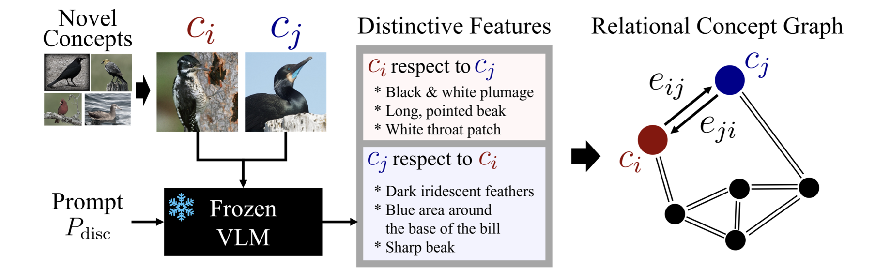
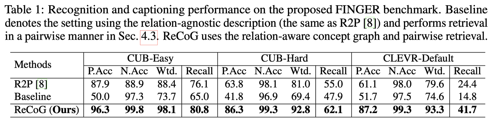
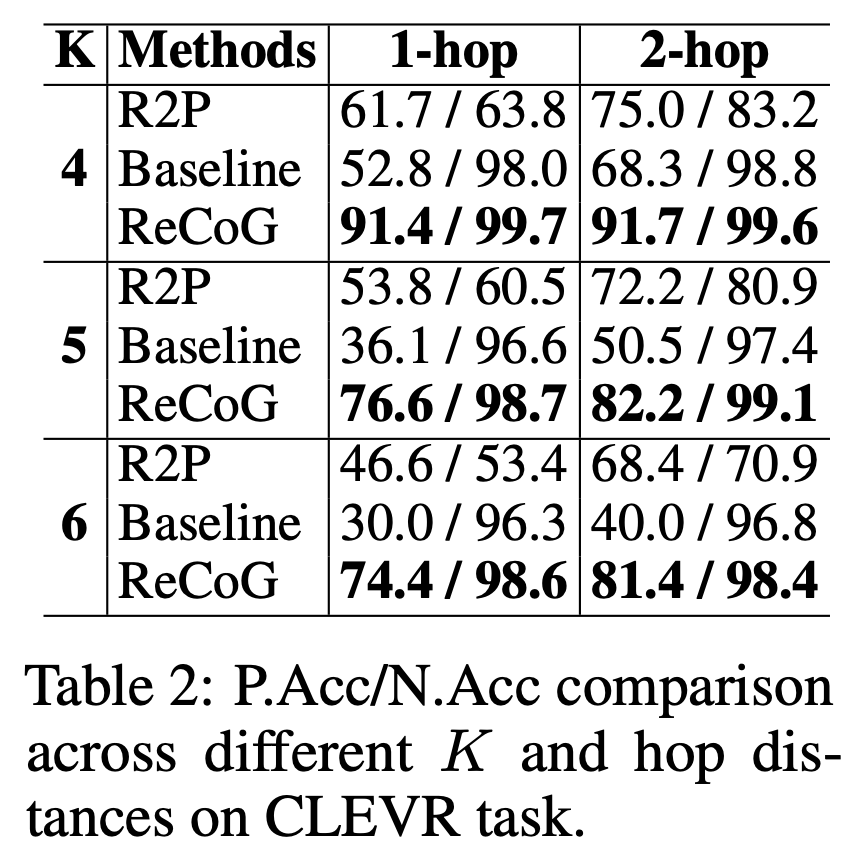
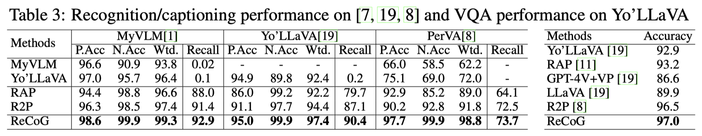

CUB-Easy
20 species sampled at random from CUB-200-2011
- Concepts
- 20
- Images
- 1 support + 19 queries per concept (400)
Foundational Vision Laboratory, Chung-Ang University
Training-free personalization adapts a frozen vision-language model (VLM) to recognize user-defined concepts from only a few exemplars by retrieving concept entries at inference time. While recent retriever-based methods enrich each concept with descriptive evidence, they largely treat concepts in isolation, so the retrieved information can be plausible yet non-discriminative, especially when the personalized concept set contains highly confusable, fine-grained categories. We argue that personalization is inherently relational: correct recognition depends on the specific distinctions between a concept and its nearest alternatives. To this end, we propose ReCoG, a Relational Concept Graph for retrieval-augmented personalization. ReCoG represents concepts as nodes and augments them with directed edges that explicitly capture discriminative cues between concept pairs, elicited by a frozen VLM during database construction. At inference, ReCoG retrieves a shortlist and resolves ambiguity via explicit pairwise comparisons conditioned on the corresponding relational edges, selecting the concept that consistently wins against competing candidates. We also introduce FINGER benchmark to test personalized recognition on confusable concept sets. Across FINGER, ReCoG substantially outperforms prior methods, with the largest gains in the most confusable regimes. ReCoG also achieves consistently best performance on established personalization benchmarks including captioning and VQA, confirming that relational evidence is broadly beneficial beyond fine-grained settings.

FINGER (FINe-Grained pERsonalization) targets concept sets with high visual confusability.
20 species sampled at random from CUB-200-2011
20 visually similar species selected with CUB attributes (predominantly black birds)
Each concept is a scene configuration; queries are rendered from different viewpoints
Each panel shows one support image per concept (5 columns × 4 rows). Click a panel to enlarge.
| Benchmark | Concepts | Paper |
|---|---|---|
| MyVLM | 29 | MyVLM: Personalizing VLMs for User-Specific Queries (ECCV 2024) |
| Yo'LLaVA | 40 | Yo'LLaVA: Your Personalized Language and Vision Assistant (NeurIPS 2024) |
| PerVA | 329 | Training-Free Personalization via Retrieval and Reasoning on Fingerprints (ICCV 2025) |


